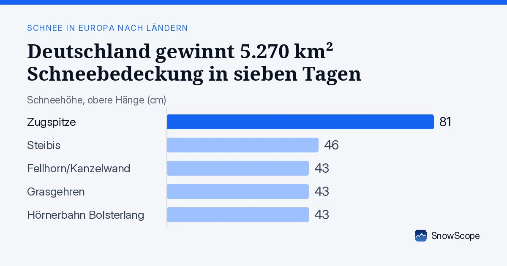
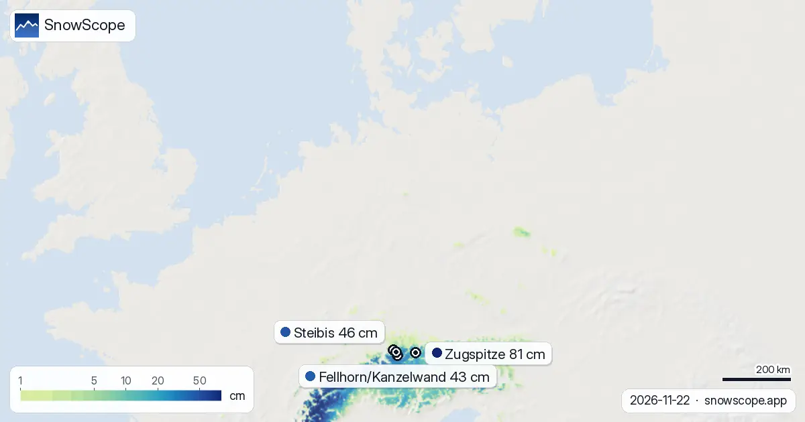
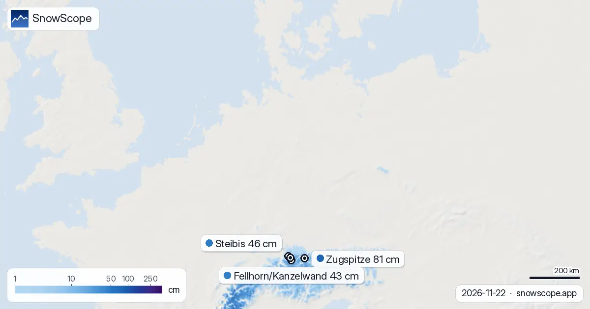

Deutschland gewinnt 5.270 km² Schneebedeckung in sieben Tagen
Deutschlands weiße Fläche hat sich in einer Woche mehr als verdoppelt: Zwischen dem 15. und 22. November kam es zu einer Schneebedeckung von 5.270 km² Neuland. Der Sprung ergibt sich aus zwei Sturmsystemen, die über die Alpen und das Hochland fegten. Die Allgäuer Alpen sammelten in nur drei Tagen 47 cm.
Die Live-Schneeprognose für Zugspitze in der SnowScope-AppSchneehöhen, Pulverschnee-Alarme und 3D-Karte, gratis.
Wie die Stürme der Woche die Schneekarte verändert haben
Vor einer Woche waren nur 5.460 km² Deutschlands schneebedeckt. Heute tragen 10.730 km² eine weiße Decke. Die Satellitendaten zeigen eine scharfe Wende dieses letzte Wochenende: Am 20. November lag die Schneebedeckung bei nur 1.790 km², dann zog ein Sturmsystem ein und innerhalb von zwei Tagen sprang die Fläche auf 10.730 km² an. Das ist die Art von Veränderung, die wir in der frühen Novembersaison beobachten.
Das Wachstum war nicht gleichmäßig über das Land verteilt. Die Allgäuer Alpen und Bayerischen Alpen, die das Hochgebirgsmassiv der Alpen in Südbayern bilden, fingen den heftigsten Schnee ab. Die Allgäuer Alpen verzeichneten 47 cm Neuschnee in 72 Stunden; die Bayerischen Alpen sahen 39 cm. Das sind Modellschätzungen für die Gebiete, keine Punktmessungen, aber sie zeigen, wo die Stürme ihre Energie konzentrierten.
| Tag | Weiße Fläche | Max. Neuschnee in 3 Tagen | Schneereichstes Skigebiet |
|---|---|---|---|
| Montag, 16. November | 2.110 km² | 2 cm | Zugspitze |
| Dienstag, 17. November | 1.470 km² | 2 cm | Zugspitze |
| Mittwoch, 18. November | 1.510 km² | 4 cm | Zugspitze |
| Donnerstag, 19. November | 1.820 km² | 6 cm | Zugspitze |
| Freitag, 20. November | 1.790 km² | 10 cm | Fellhorn/Kanzelwand |
| Samstag, 21. November | 3.050 km² | 18 cm | Zugspitze |
| Sonntag, 22. November | 10.730 km² | 23 cm | Zugspitze |

Die Schneegrenze steigt noch immer
Trotz der Schneemengen liegt die Schneegrenze heute bei 800 m. Das ist hoch für Ende November. In tieferen Lagen ist die Schneebedeckung fleckig: Zwischen 500 und 1.000 m ist nur 17 Prozent des Bodens weiß. Über 1.000 m ändert sich das Bild schnell. Zwischen 1.000 und 1.500 m tragen jetzt 94 Prozent der Hänge Schnee, mit einer durchschnittlichen Tiefe von 7 cm. Über 1.500 m ist die Bedeckung komplett und die Mächtigkeiten wachsen kontinuierlich: 19 cm zwischen 1.500 und 2.000 m, und 27 cm zwischen 2.000 und 2.500 m.
Frühjahrsschnee in tieferen Lagen kann dünn und fleckig sein. Steine können noch sichtbar sein. Über 1.500 m sieht es zuverlässiger aus: Eine durchgehende Schneeunterlage ist jetzt vorhanden.

Zugspitze führt als Tiefschnee-Resort
Unter Deutschlands Skigebieten hält die Zugspitze den meisten Schnee: 81 cm gemessen auf den Pisten heute, mit 39 cm in den vergangenen 72 Stunden angekommen. Steibis, Fellhorn/Kanzelwand, Grasgehren und Hörnerbahn Bolsterlang zeigen alle 43–46 cm. Diese fünf Resorts führen die Liste an; sie liegen zwischen 1.662 und 2.627 m Meereshöhe, was ihren Tiefenvorteil erklärt. Von Deutschlands 231 Skigebieten haben jetzt 112 eine messbare Schneebedeckung – mehr als die Hälfte.
Neuschnee kommt noch immer
Die Stürme sind noch nicht vorbei. Unser Schneemodell prognostiziert 9 cm Neuschnee in den nächsten drei Tagen in den am stärksten betroffenen Gebieten, mit weiteren 7 cm in den folgenden vier Tagen möglich. Der heftigste Einzeltag sieht nach dem 26. November aus, wenn 9 cm prognostiziert sind. Das bedeutet, dass die Schneebedeckung weiterhin talabwärts expandieren wird und die Mächtigkeiten in der Höhe bis Ende des Monats aufbauen werden.
Ausblick: mehr Schnee bis Anfang Dezember
Wenn wir weiter hinausschauen, ist ein zweiter Schneeimpuls zwischen dem 30. November und 6. Dezember wahrscheinlich, wenn das Modell in manchen Gebieten bis zu 18 cm möglich zeigt. Die zweite Dezemberwoche bringt oft stabilen Schnee über den hohen Alpen. Jetzt ist der Trend klar: Schnee kommt an, bedeckt jeden Tag mehr Fläche, und die Mächtigkeiten in der Höhe wachsen schnell.
Wie Deutschland sich mit Nachbarn vergleicht
Österreich liegt vorne: 60 Prozent des Hochgeländes sind weiß, mit Stubaier Gletscher bei 67 cm und weitere 25 cm in sieben Tagen prognostiziert. Die Schweiz ist noch weiter vorne, mit 71 Prozent Bedeckung, Glacier 3000 zeigt 74 cm und bis zu 49 cm mehr erwartet. Beide Nachbarn haben eine höhere durchschnittliche Meereshöhe und fingen die Stürme früher in der Woche. Deutschland holt schnell auf.
Tipps für Skifahrer
- Prüfe das offizielle Lawinenbulletin für die Bayerischen und Allgäuer Alpen, bevor du off-piste gehst; Neuschnee in der Höhe erhöht das Lawinenrisiko für die nächsten Tage.
- Über 1.500 m hast du jetzt eine solide Grundlage; unter 1.200 m, achte auf Flecken und dünne Bedeckung, besonders an südexponierten Hängen.
- Erwarte mehr Schnee bis Ende November. Anfang Dezember bringt nochmal eine Chance für signifikante Akkumulationen.
- Zugspitze, Steibis und Fellhorn/Kanzelwand haben jetzt den tiefsten Schnee und werden deine sichersten Wahlmöglichkeiten in der Frühjahrsaison sein.
- Beobachte die Schneegrenze: Wenn sie im nächsten Sturm unter 800 m fällt, werden tiefere Resorts langsam fahrbar.
Zu diesen Zahlen
Die Schneehöhen der Skigebiete sind der meiste Schnee in den oberen Hängen laut SnowScope-Schneemodell (etwa 1 km, Lauf vom 22. November); es sind Schätzungen für eine Fläche, keine Messung an einem Punkt. Werte von Messstationen sind Messungen am angegebenen Tag. Prognosen können sich ändern. Lies vor dem Freeriden immer den offiziellen Lawinenlagebericht.
Diesen Bericht zitieren
Für Forschung, Lehre oder Presse: Zahlen und Grafiken sind unter CC BY 4.0 mit dieser Quellenangabe frei nutzbar.
SnowScope (2026), Deutschland gewinnt 5.270 km² Schneebedeckung in sieben Tagen, https://snowscope.app/blog/de/2026/11/germany-snow-cover-gain-this-week-22-november-2026.html, abgerufen am 2026-11-22
SnowScope (Atlas Labs). (2026, November 22). Deutschland gewinnt 5.270 km² Schneebedeckung in sieben Tagen. SnowScope snow reports. https://snowscope.app/blog/de/2026/11/germany-snow-cover-gain-this-week-22-november-2026.html
BibTeX
@misc{snowscope2026germanysnowcovergainthis,
author = {{SnowScope (Atlas Labs)}},
title = {Deutschland gewinnt 5.270 km² Schneebedeckung in sieben Tagen},
year = {2026},
month = nov,
howpublished = {\url{https://snowscope.app/blog/de/2026/11/germany-snow-cover-gain-this-week-22-november-2026.html}},
note = {Published 2026-11-22 12:12 UTC; accessed 2026-11-22}
}· CC BY 4.0 · Methoden, Daten und Werkzeuge →
Zugspitze: Schnee und Temperatur nach Höhe, dieser Winter vs letzter (Werkzeuge) →
Zugspitze folgen
Gratis: eine Nachricht, wenn Neuschnee kommt, und jeden Morgen die Vorhersage.